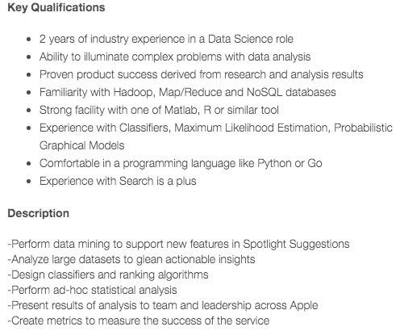

Para aplicação da Ciência de Dados em um projeto, não basta ter uma ótima fonte de dados disponível e os melhores equipamentos e ferramentas prontos para uso. É necessário uma equipe.
E, tal qual foi dito no post “link pro post”, aqui também não há uma estrutura de equipe certa ou errada. A natureza dos problemas, a forma de trabalho, a disponibilidade de recursos humanos e o próprio estilo da organização que vai ditar a melhor maneira de se montar uma equipe.
Portanto, esse post não vai se atrever a dizer o que é bom ou o que é ruim para uma equipe trabalhar com ciência de dados. Trataremos apenas de falar um pouco sobre os principais papéis atuantes em projetos de ciência de dados, de forma não exaustiva, baseado em nossas observações do dia a dia e em leituras de blogs e artigos sobre o assunto.
Vale ressaltar que, assim como as fases de um projeto em ciência dos dados, os papéis de uma equipe se sobrepõe e se complementam, sendo bem difícil limitar precisamente as atuações de cada papel. Essa sobreposição costuma ser muito saudável, uma vez que os membros da equipe acabam aprendendo, uns com os outros cada vez mais sobre todos os papéis envolvidos em um projeto.
Portanto, a divisão da equipe em papéis é muito pouco rigorosa e os nomes e títulos a seguir são apenas para tentar entender um pouco mais das atividades que são realizadas em um projeto com aplicação de ciência de dados.
Para se ter uma ideia, em nosso dia a dia de trabalho conseguimos identificar a atuação e o “momento” de cada papel, mas nunca efetivamente dividimos a equipe formalmente nesses papéis. Talvez essa divisão seja mais formal em grandes empresas com equipes maiores.
Imagine se apenas uma pessoa tivesse que lidar com todas as fases e problemas em um projeto de ciência de dados? Esse cara é um Herói.
Ele se vira mais que o suficiente com ferramentas e linguagens de programação para manipular dados, entende mais que o suficiente de estatística e machine learning para escolher boas estratégias e modelar soluções, e sabe se expressar claramente e desenhar um bom produto final para apresentar suas soluções ou análise para o cliente.
Parece ser algo bem raro, mas esse papel de herói poderia ser facilmente exercido por alguns participantes do Kaggle, um portal com desafios (com prêmios $) em ciência de dados que consegue reunir pessoas capazes de descobrir soluções e otimizar resultados de forma impressionante.
Será que é possível montar uma equipe inteira só de heróis?
Trata-se de um perfil mais voltado para a área de ciência da computação. Normalmente é quem cuida da infraestrutura e arquitetura dos dados, ajudando com suporte às plataformas, processos de ETL, sistemas operacionais e softwares envolvidos no processo.
Costuma ser o papel que entende melhor de engenharia de software e contribui muito na hora de estruturar um produto final com complexidade maior, como um dashboard, um sistema ou um algoritmo.
Também é quem mais atua com banco de dados, SQL, estrutura de dados, cargas, integrações e extrações de dados, limpeza de dados.
Para ilustrar esse papel, segue os requisitos para se candidatar a uma vaga de Engenheiro de Dados, retirado do Linkedin do Facebook
Esse papel possui habilidades mais voltadas para matemática, estatística e economia, e precisa ter uma ótima capacidade analítica para aplicar essas habilidades em estratégias buscando descobrir soluções para os desafios de um projeto em ciência de dados.
Costuma ser um perfil mais acadêmico, pois o processo de análise de dados exige um pouco do rigor científico para que se prove consistente, satisfatório e robusto. É preciso saber fazer as perguntas certas, e percorrer os caminhos certos para uma resposta convincente.
Intimidade com grandes quantidades de dado, saber aplicar modelos de machine learning e modelos de classificação, mineração de dados, analise de séries temporais e até econometria são conhecimentos que ajudam nas atividades do cientista de dados.
Portanto, dominar alguma linguagem para processamento estatístico é essencial: R, Python, Matlab, etc. Também é importante saber se expressar com clareza e confeccionar bons relatórios e produtos finais.
Para ilustrar, segue os requisitos para uma vaga de cientista de dados, retirado do Linkedin do Facebook
|  |
A tradução fica um pouco estranha, mas não se trata de um gerente de banco de dados, e sim do gerente de um projeto em ciência de dados. Esse papel é responsável por gerenciar as diversas fases do projeto, integrando a equipe e interagindo com os clientes, definindo as prioridades e o rumo que as coisas vão tomar para obter sucesso com os objetivos do projeto.
Esse papel faz bastante uso de habilidades interpessoais, como comunicação, compreensão e capacidade de manter o ânimo da equipe. Cabe ao gerente lidar com os problemas internos e externos ao time, e para isso precisa conhecer bem os papéis que cada um da sua equipe exerce e as gerenciar expectativas e necessidades dos clientes de um projeto com aplicação de ciência de dados.
Ou seja, cabe ao gerente evitar frustrações e manter a motivação tanto internamente quanto dos clientes.
Cabe ressaltar que não necessariamente o gerente de um projeto dessa natureza precisa ser especialista em Data Science. No entanto, é importante sim ter um pouco de intimidade com dados e com as ferramentas envolvidas no processo, pois conhecer um pouco de ciência de dados vai ajudar a eliminar as barreiras para a equipe atingir o sucesso
É o Chief Data Officer. Talvez seja um perfil que se encontre mais facilmente em grandes empresas ou em órgãos públicos (O TCU, por exemplo, implantou a figura do CDO), pois trata-se de um papel de executivo de alta gerência incumbido de criar e manter uma cultura de dados na organização, convencendo a todos de que os dados precisam ser encarados de uma maneira estratégica para a organização.
O MIT produziu um estudo muito interessante descrevendo em detalhes o papel e a importância do CDO nas organizações. Usando uma abordagem de cubo e 3 dimensões, eles estruturaram o funcionamento desse papel e suas interações. Vale a pena a leitura.
Por ser um papel de alta gerência, o CDO tem mais autoridade e responsabilidades em relação aos gerentes de projeto.
Trata-se de um termo genérico que estamos usando para designar todos àqueles diretamente interessados nos resultados de um projeto com aplicação de ciência de dados. Não costuma entender muito e data science, mas entende bem da sua área de negócio.
Eventualmente o cliente interessado no projeto pode questionar ou dar pouca credibilidade aos resultados por não ser exatamente “o resultado que estava esperando” ou por demonstrar justamente o contrário de suas crenças. Isso é bastante comum quando o cliente já tem alguma opinião formada ou espera confirmar algo com os resultados do projeto.
Cabe ao gerente lidar com esse tipo de situação e cabe à equipe toda ser o mais clara e precisa possível na apresentação dos resultados.